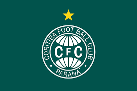
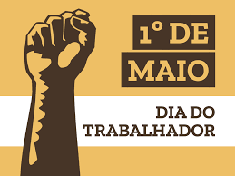

coxa é foda
Publicado: 12/03/2024

O apelido Coxa-Branca (atualmente também apenas Coxa) teve origem na discriminação que os descendentes de alemães sofriam na primeira metade do século passado no Brasil, principalmente no período da Segunda Guerra Mundial, quando esses imigrantes eram vistos por algumas pessoas como inimigos infiltrados no país.
Leia mais..
dia das crianças
Publicado: 05/09/2023
Um dos patrimônios naturais mais valiosos de toda a humanidade e a maior reserva natural do planeta! A Floresta Amazônica é chave importante para a estabilidade climática planetária, ela influencia e impacta regiões que ultrapassam suas fronteiras. O bioma Amazônia abrange a maior bacia hidrográfica do mundo e a maior floresta tropical – a maior diversidade de fauna e flora do planeta!
Todo esse ecossistema está ameaçado, é preciso unir forças, dar voz aos indígenas, aos povos tradicionais da floresta! Defender a Amazônia é defender a vida!
Leia mais..
dia 25 de dezembro natal
publicado: em 2010
Natal ou Dia de Natal é um feriado e festival religioso cristão[3] comemorado anualmente em 25 de dezembro (nos países eslavos e ortodoxos, cujos calendários eram baseados no calendário juliano, é comemorado no dia 7 de janeiro). A data é o centro das festas de fim de ano e da temporada de férias, sendo, no cristianismo, o marco inicial do Ciclo do Natal, que dura doze dias.[4]
De acordo com maior parte dos historiadores, a festa originalmente era destinada a celebrar o nascimento anual do Deus Sol no solstício de inverno (natalis invicti Solis),[5] a festividade foi ressignificada pela Igreja Católica no século III para estimular a conversão dos povos pagãos sob o domínio do Império Romano[6][7][8] e então passou a comemorar o nascimento de Jesus de Nazaré.[9][10]
Embora tradicionalmente seja um dia santificado cristão, o Natal é amplamente comemorado por muitos não cristãos,[1][11] sendo que alguns de seus costumes populares e temas comemorativos têm origens pré-cristãs ou seculares. Costumes populares modernos típicos do feriado incluem a troca de presentes e cartões, a Ceia de Natal, músicas natalinas, festas de igreja, uma refeição especial e a exibição de decorações diferentes; incluindo as árvores de Natal, pisca-piscas e guirlandas, visco, presépios e ilex. Além disso, o Papai Noel (conhecido como Pai Natal em Portugal) é uma figura mitológica popular em muitos países, associada com os presentes para crianças.[12]
Embora tradicionalmente seja um dia santificado cristão, o Natal é amplamente comemorado por muitos não cristãos,[1][11] sendo que alguns de seus costumes populares e temas comemorativos têm origens pré-cristãs ou seculares. Costumes populares modernos típicos do feriado incluem a troca de presentes e cartões, a Ceia de Natal, músicas natalinas, festas de igreja, uma refeição especial e a exibição de decorações diferentes; incluindo as árvores de Natal, pisca-piscas e guirlandas, visco, presépios e ilex. Além disso, o Papai Noel (conhecido como Pai Natal em Portugal) é uma figura mitológica popular em muitos países, associada com os presentes para crianças.[12]
Leia mais..
dia 1 de maio

Dia do Trabalhador
Artigo
Discussão
Ler
Editar
Ver histórico
Ferramentas
Origem: Wikipédia, a enciclopédia livre.
Desculpe o incômodo, mas nossa campanha de captação de recursos não vai durar muito tempo
Esta quarta-feira, junte-se aos 2% de leitores que optam por doar. Se todos que lerem isto doarem só R$ 10, atingiremos nossa meta em poucas horas. R$ 10 é tudo que pedimos.
DOAR R$ 10 TALVEZ DEPOIS
20 de março: A Wikipédia ainda não está à venda.
Desculpe, já pedimos isto a você algumas vezes recentemente, mas é quarta-feira, 20 de março, e logo será tarde demais para ajudar a organização sem fins lucrativos por trás da Wikipédia. A Wikipédia é gratuita e não utiliza anúncios. Se todas as pessoas que estão lendo isto doassem R$ 10, atingiríamos nossa meta em poucas horas. Só 2% dos nossos leitores fazem doações, por isso, se a Wikipédia lhe ofereceu conhecimento no valor de R$ 10, por favor, faça uma doação. Qualquer contribuição ajuda, seja R$ 10 ou R$ 50.
Doar R$ 10
Doar outro valor
Wikimedia Foundation LogoTALVEZ DEPOIS
JÁ DOEI
FECHAR
Esta página cita fontes, mas não cobrem todo o conteúdo
Esta página cita fontes, mas que não cobrem todo o conteúdo. Ajude a inserir referências. Conteúdo não verificável pode ser removido.—Encontre fontes: ABW • CAPES • Google (N • L • A) (Junho de 2022)
Dia do Trabalhador
Dia do Trabalhador na cidade de Mumbai, na Índia
Nome oficial Dia Internacional do Trabalhador
Tipo Internacional
D
ata 1 de maio
O Dia do Trabalhador,[1] Dia Internacional dos Trabalhadores é uma data comemorativa internacional, dedicada aos trabalhadores, celebrada anualmente no dia 1 de maio em quase todos os países do mundo, sendo feriado em muitos deles.
A homenagem remonta ao dia 1 de maio de 1886, quando uma greve foi iniciada na cidade norte-americana de Chicago com o objetivo de conquistar melhores condições de trabalho, principalmente a redução da jornada de trabalho diária, que chegava a 17 horas, para oito horas. Durante a manifestação houve confrontos com a polícia, o que resultou em prisões e mortes de trabalhadores. Este acontecimento serviria de inspiração para muitas outras manifestações que se seguiriam. Estas lutas operárias culminaram numa série de direitos, previstos em leis e sancionados por constituições.[2]
No período entre-guerras, a duração máxima da jornada de trabalho foi fixada em oito horas, na maior parte dos países industrializados.[3]
No calendário litúrgico, o dia celebra a memória de São José Operário, o santo padroeiro dos trabalhadores.
História
Origens operárias e anarquistas
Ver artigo principal: Revolta de Haymarket
Nos Estados Unidos, durante o congresso de 1884, os sindicatos estabeleceram o prazo de dois anos para conseguir impor aos empregadores a limitação da jornada de trabalho para oito horas. Eles iniciaram a campanha em 1 de maio, quando muitas empresas começavam o seu ano contábil, os contratos de trabalho terminavam e os trabalhadores buscavam outros empregos. Estimulada pelos anarquistas, a adesão à greve geral de 1 de maio de 1886 foi ampla,[4] envolvendo cerca de 340 000 trabalhadores em todo o país.
Em Chicago, a greve atingiu várias empresas. No dia 3 de maio, durante uma manifestação, grevistas da fábrica McCormick sairam em perseguição dos indivíduos contratados pela empresa para furar a greve. São recebidos pelos detetives da agência Pinkerton e policias armados de espingardas. O confronto resultou em três trabalhadores mortos. No dia seguinte, realizou-se uma marcha de protesto e, à noite, após a multidão se ter dispersado na Haymarket Square, restaram cerca de duzentos manifestantes e o mesmo número de policias. Foi quando uma bomba explodiu perto dos policias, matando um deles. Sete outros foram mortos no confronto que se seguiu.
Em consequência desses eventos, os sindicalistas anarquistas Albert Parsons, Adolph Fischer, George Engel, August Spies e Louis Lingg, foram condenados à forca, apesar da inexistência de provas. Louis Lingg cometeu suicídio na prisão, ingerindo uma cápsula explosiva. Os outros quatro foram enforcados em 11 de novembro de 1887, dia que ficou conhecido como Black Friday. Três outros foram condenados à prisão perpétua. Em 1893 eles foram inocentados e reabilitados pelo governador de Illinois, que confirmou ter sido o chefe da polícia quem organizara tudo, inclusive encomendando o atentado para justificar a repressão que viria a seguir.[5][6][7]
Leia mais..